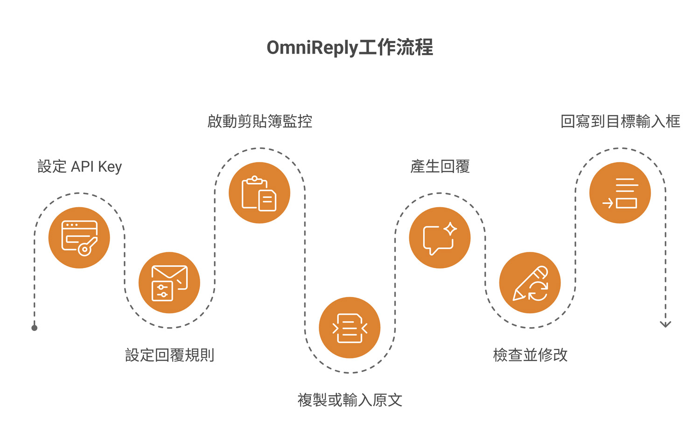
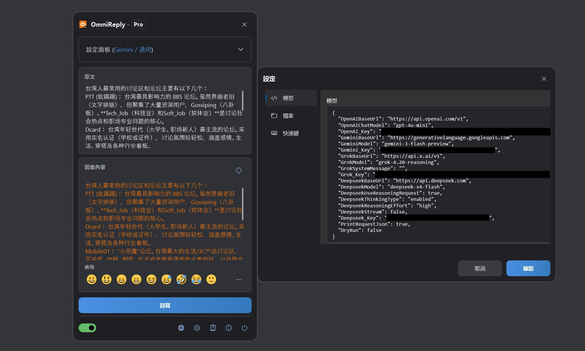
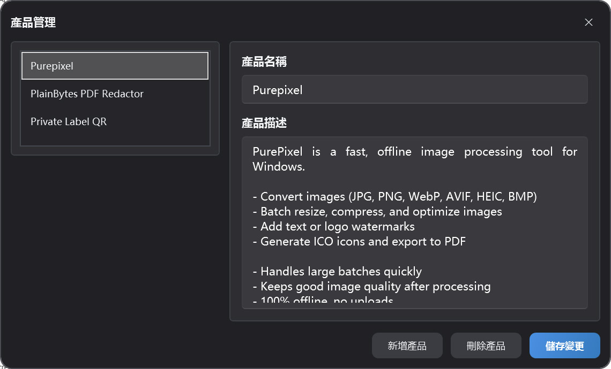

以剪貼簿驅動的 AI 回覆助理
OmniReply 使用說明
本文件協助您瞭解 OmniReply 的介面、設定方式、AI 回覆產生流程和回寫機制。您可以先依快速上手跑通一次，再回到功能說明檢視細節。
1. 認識 OmniReply
OmniReply 的目標不是替您自動傳送訊息，而是把「理解原文、產生候選回覆、人工確認、輸入到目標應用程式」這條流程變快。
1.1 OmniReply 是什麼
OmniReply 是一款 Windows 桌面 AI 快速回覆工具。它可以監聽剪貼簿中的文字，結合您選擇的模型、場景、語言、風格、回覆目的和回覆長度產生回覆。產生結果會顯示在可編輯的回覆框中，您確認後再回寫到目標應用程式的輸入框。
1.2 適合哪些場景
社群媒體互動
為留言、私訊、貼文回覆準備自然、有語境的內容。
客戶支援
根據使用者問題快速整理解釋、安撫、建議或下一步操作。
產品推薦
結合產品資料產生簡短推薦、功能說明和對比回覆。
1.3 基本工作流

-
設定 API Key
在設定中填寫要使用的 AI 服務 API Key。
-
設定回覆規則
選擇 AI 模型、場景、回覆語言類型、回覆語言風格、回覆目的和回覆長度。
-
啟動剪貼簿監控
開啟剪貼簿監控（Ctrl+Shift+X）。懸浮球變為彩色，表示正在工作。
-
複製或輸入原文
複製問題（Ctrl+C）、留言或訊息，也可以直接輸入原文內容。
-
產生 AI 回覆
OmniReply 根據原文和回覆規則產生回覆草稿。
-
檢查並修改
檢視產生結果，按需要調整措辭、細節或表情。
-
回寫到目標輸入框
先點選目標輸入框，再點選回寫，或按（Ctrl+Shift+Enter）。
2. 介面與功能概覽
OmniReply 的日常操作主要集中在懸浮主視窗，設定視窗和產品管理視窗只在設定時使用。

2.1 主視窗結構
| 區域 | 作用 | 使用建議 |
|---|---|---|
| 標題欄 | 顯示應用名稱和目前授權狀態，可摺疊為懸浮球。 | 視窗佔用空間時可收起，等待複製內容自動產生。 |
| 設定面板 | 選擇模型、場景、語言、風格、目的、長度和產品。 | 切換規則後可手動重新產生，避免沿用舊回覆。 |
| 原文區 | 顯示剪貼簿捕獲到的內容，也可手動輸入。 | 適合在不方便複製時直接貼上或編輯問題內容。 |
| 回覆區 | 顯示 AI 產生的回覆，並允許繼續編輯。 | 傳送或回寫前務必檢查事實、語氣和敏感資訊。 |
| 表情欄 | 快速插入常用表情字元。 | 表情會作為文字插入，仍可編輯和刪除。 |
| 底部狀態列 | 控制剪貼簿監控、語言切換、設定、關於和退出。 | 首次使用時先開啟剪貼簿監控開關。 |
2.2 懸浮球狀態
視窗收起後會變成懸浮球。懸浮球可拖動，可連按兩下展開，也會表現目前服務狀態：工作狀態為彩色，表示剪貼簿監控已開啟；非工作狀態為灰色，表示監控未開啟。啟用剪貼簿監控後，複製新的文字會觸發捕獲；等待模型返回時，懸浮球會呈現請求中的狀態。
2.3 設定視窗
模型設定
維護 OpenAI、Gemini、Grok、DeepSeek 的 API Key、基礎位址和模型名稱。
網路設定（未開放）
按需啟用手動 HTTP 代理。未啟用時，應用程式會使用系統預設 Proxy。
快速鍵設定
修改顯示視窗、啟動服務、重新整理回覆和回寫的全域快速鍵。
檔案設定
設定歷史記錄儲存目錄。留空時不會儲存歷史記錄。
2.4 產品管理視窗
產品管理視窗用於維護目前設定檔中的產品名稱和產品描述。當回覆目的選擇為產品推薦時，目前選中的產品資料會作為上下文傳送給 AI，讓回覆更貼近產品特點。

3. 快速上手
第一次使用時，建議按下面順序完成。只要跑通一次，後續通常只需要複製原文、檢查回覆和回寫。
新增 API Key
開啟設定視窗，在模型設定中填寫您要使用的 AI 服務 API Key。不使用的服務可以留空。至少需要為目前選擇的模型設定有效 Key。
設定回覆規則
在主視窗選擇模型、場景、語言、風格、回覆目的和回覆長度。如果是產品推薦場景，也請選擇合適的產品資料。
啟動剪貼簿監控
開啟底部狀態列的剪貼簿監控開關，或使用 Ctrl + Shift + X 啟動服務。
複製或輸入原文
在外部應用程式中複製問題、留言或訊息。也可以直接在原文區輸入內容，然後手動重新整理產生。
產生 AI 回覆
複製新內容後，OmniReply 會讀取原文並呼叫目前模型。需要重新產生時，點選重新整理按鈕或按 Ctrl + Shift + R。
檢查並修改回覆
回覆框是可編輯的。您可以修改語氣、刪減內容、補充資訊或插入表情。AI 產生內容不應略過人工確認。
回寫到目標輸入框
先點選目標應用中的輸入框，讓游標停在要輸入的位置，再點選回寫按鈕，或按 Ctrl + Shift + Enter。
4. 功能說明
本章按實際功能解釋每個設定項的作用，以及它們如何影響最終回覆。
4.1 AI 模型與 API Key
| 模型選項 | 需要設定 | 說明 |
|---|---|---|
| ChatGPT (OpenAI) | OpenAI_Key |
使用 OpenAI 相容的 Chat Completions 介面，可設定基礎位址和模型名稱。 |
| Gemini (Google) | Gemini_Key |
使用 Google Gemini 服務，可設定 Gemini 基礎位址和模型名稱。 |
| Grok (xAI) | Grok_Key |
使用 xAI Grok 服務，可設定基礎位址、模型名稱和系統訊息。 |
| DeepSeek (DeepSeek) | Deepseek_Key |
支援 OpenAI 相容請求或 DeepSeek reasoning 請求設定。 |
目前選擇哪個模型，就需要該模型對應的 Key。未使用的服務可以不填寫。
4.2 回覆規則
| 規則 | 影響 | 建議 |
|---|---|---|
| 場景 | 決定回覆所處平台或上下文，例如社群平台、論壇、客服。 | 儘量選擇最接近真實使用環境的場景。 |
| 語言 | 控制輸出語言。自動語言會盡量跟隨上下文。 | 需要固定語言時，不要使用自動語言。 |
| 風格 | 控制語氣、人設和表達方式。 | 公開留言建議使用自然、友善、不過度行銷的風格。 |
| 回覆目的 | 決定回覆目標，例如推薦、支援、解釋、反駁。 | 目的會強烈影響內容方向，產生前請先確認。 |
| 回覆長度 | 控制輸出是簡短、中等還是詳細。 | 社群平台通常優先使用短回覆或自動長度。 |
4.3 產品推薦資料
產品推薦資料包含產品名稱和產品描述。選擇推薦類目的時，OmniReply 會把目前選中的產品描述作為上下文交給 AI。建議產品描述包含：
- 產品主要解決什麼問題。
- 核心功能和優勢。
- 適合哪些使用者或場景。
- 是否離線、是否上傳資料、是否有明顯限制。
- 避免誇大承諾，減少產生過度行銷內容的機率。
4.4 剪貼簿監控
啟用監控後，OmniReply 會監聽系統剪貼簿更新，並讀取新的文字內容。為了避免誤觸發，應用會忽略空文字、重複文字，以及在 OmniReply 自身視窗活躍時發生的複製操作。
4.5 回覆編輯與表情
回覆內容區域是可編輯文字框。您可以直接改寫 AI 產生的內容，也可以用表情欄或表情彈出視窗插入常用 Unicode 表情。部分系統或 WPF 控制項可能無法將 emoji 顯示成彩色，但插入的字元仍然是標準表情字元。
4.6 回寫與快速鍵
回寫會先隱藏 OmniReply 視窗，短暫等待目標輸入框恢復焦點，然後逐字元模擬鍵盤輸入。遇到換行時會使用模擬換行鍵。預設快速鍵如下：
| 操作 | 預設快速鍵 |
|---|---|
| 顯示或收起主視窗 | Ctrl + Shift + D |
| 啟動或停止剪貼簿監控 | Ctrl + Shift + X |
| 重新產生回覆 | Ctrl + Shift + R |
| 回寫回覆內容 | Ctrl + Shift + Enter |
4.7 歷史記錄
在檔案設定中指定歷史記錄目錄後，OmniReply 會按 JSONL 格式儲存原文、回覆內容和請求時間。歷史目錄留空時不會寫入歷史記錄。
5. 資料、隱私與授權
OmniReply 的設定和資料儲存在本機；模型請求會直接發往您選擇的 AI 服務。
5.1 本機儲存的資料
| 資料 | 說明 | 使用者可見管理方式 |
|---|---|---|
| 應用程式設定 | 模型位址、API Key、Proxy、快速鍵、歷史記錄目錄等。 | 在設定視窗中檢視和修改。 |
| 設定檔與產品資料 | 目前設定檔、產品列表、選中的場景和規則。 | 在主視窗和產品管理視窗中維護。 |
5.2 AI 請求會傳送哪些內容
產生回覆時，OmniReply 會將原文、目前回覆規則、必要的產品資料和模型請求參數傳送給目前選擇的 AI 服務。不同服務由您自己的 API Key 呼叫，應用程式不經由中間伺服器轉發。
5.3 API Key 與隱私安全
- 不要把包含 API Key 的設定檔案分享給他人。
- 如果使用公用電腦，退出前請確認設定檔案和歷史記錄已妥善處理。
- 複製敏感內容前，請確認所選 AI 服務的隱私政策和資料處理規則。
- 歷史記錄目錄為空時，OmniReply 不儲存原文和回覆歷史。
5.4 Free / Pro 版本差異
| 版本 | 說明 |
|---|---|
| Free | 每個曆日最多可進行 10 次模型產生，並可能限制部分規則選擇。 |
| Pro | 解鎖專業版能力。具體購買和授權狀態以應用程式內授權視窗為準。 |
6. 常見問題與疑難排解
如果使用過程中出現異常，先從這裡檢查。大多數問題都和監控開關、API Key、網路代理、快速鍵衝突或目標輸入框焦點有關。
6.1 複製後沒有反應
請按順序檢查：
- 底部剪貼簿監控開關是否已開啟。
- 複製內容是否為純文字，且不是空內容。
- 是否正在等待上一條 AI 請求完成。
- 是否複製了和上一次完全相同的內容。
- 是否在 OmniReply 自身視窗中複製內容。應用程式會忽略自身使用中視窗中的複製操作。
6.2 提示未設定 API Key
目前選擇的模型對應服務沒有 Key。進入設定視窗，為目前模型對應的服務填寫 API Key，或切換到已經設定好的模型。
6.3 AI 請求失敗或逾時
常見原因包括 Key 無效、配額不足、服務繁忙、網路不可用、Proxy 設定錯誤或請求逾時。先確認瀏覽器和系統 Proxy 能存取對應 AI 服務，再檢查設定中的基礎位址、模型名稱和 Key。
6.4 回覆語言或風格不符合預期
檢查語言、場景、風格、回覆目的和回覆長度。對於 OpenAI 相容模型，固定語言會寫入系統提示；如果仍不穩定，可將語言設為明確的目標語言後重新產生。
6.5 回寫到了錯誤位置
回寫前必須先點選目標輸入框，讓游標停在正確位置。回寫是模擬鍵盤輸入，如果焦點在其他視窗或控制元件中，內容就會輸入到那裡。
6.6 快速鍵無效
快速鍵可能已被其他軟體佔用。進入設定視窗的快速鍵分頁，改成帶有 Ctrl、Shift、Alt 或 Win 的組合鍵，並避免和系統快速鍵衝突。
6.7 表情顯示異常
WPF 文字框在部分系統上可能不能穩定顯示彩色 emoji。即使介面裡顯示成單色，插入和回寫的通常仍是標準 Unicode 表情字元。目標應用是否顯示彩色，取決於目標應用和系統字型支援。
6.8 歷史記錄沒有儲存
歷史記錄只有在檔案設定中指定了歷史記錄目錄後才會儲存。目錄為空表示不記錄歷史。請確認目錄存在且目前使用者有寫入權限。
6.9 回報問題時需要提供什麼
建議提供應用程式版本、Windows 版本、目前模型、錯誤提示、是否使用 Proxy、是否能重現、重現步驟，以及必要的螢幕擷圖。請不要傳送真實 API Key。